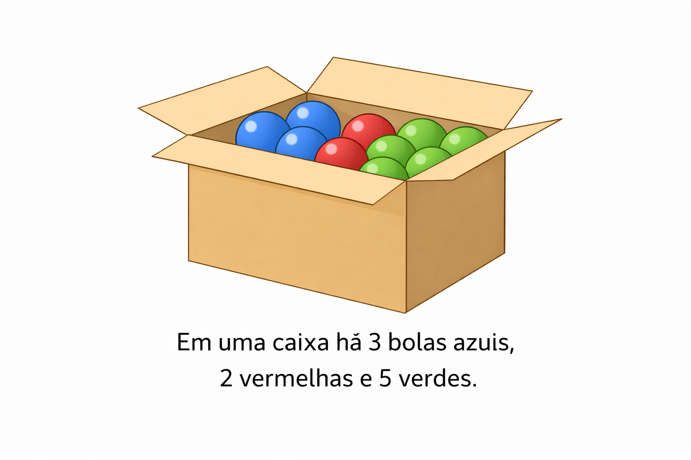
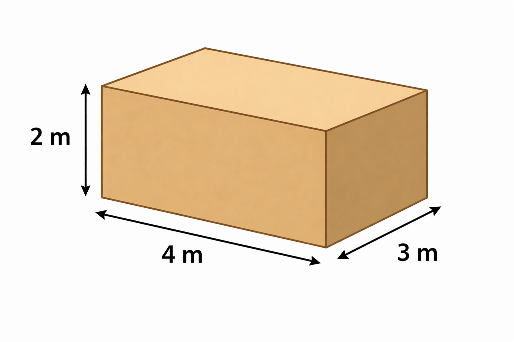

Professor: Gustavo de Medeiros
Nome: _____________________________________________
Data: ____/____/______
Parte 1 – Múltipla Escolha
1) Um produto custa R$ 200,00 e teve desconto de 10%. Qual é o valor do desconto?

2) Calcule: 3² + √16
3) Resolva: 3x - 5 = 16
4) Observe a imagem abaixo e responda justificando com calculos:
Em uma caixa há 3 bolas azuis, 2 vermelhas e 5 verdes. Qual a probabilidade de retirar uma bola vermelha?
Parte 2 – Desenho
5) Desenhe duas retas que formem um ângulo de 90°.
6) Desenhe um pentágono convexo e indique quantas diagonais ele possui.
7) Desenhe um triângulo de base 8 cm e altura 5 cm e calcule sua área.
Parte 3 – Descritivas
8) Calcule o valor de 2a + 5, sendo a = 3. Explique.
9) Um carro percorre 180 km em 3 horas. Qual é sua velocidade média? Justifique.
10) Observe a imagem abaixo e resolva:
Uma caixa tem 4 m de comprimento, 3 m de largura e 2 m de altura.
a) Calcule o volume.
b) Se dobrarmos a altura, qual será o novo volume?